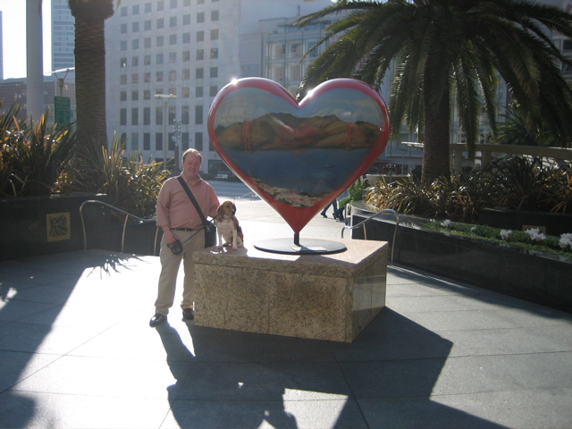

Up Next-->

A Tony neighborhood
Last weekend we stayed in the Sir Francis Drake hotel, half a block from Union Square, while our house was fumigated. On Friday morning Huxley (who, as you recall, recently retired from his career in cardiology and is fond of hearts) posed in Union Square by an artwork from the hand of none other than San Francisco's favorite balladeer Tony Bennett.